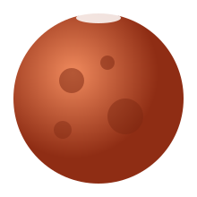

Марс — четверта планета від Сонця. Його часто називають Червоною планетою, бо поверхня вкрита пилом з оксидом заліза, тобто, по суті, іржею. Саме вона надає планеті червонуватого кольору.
Марс приблизно вдвічі менший за Землю. Доба на Марсі майже така сама, як у нас, — близько 24 годин 37 хвилин, а от рік триває майже вдвічі довше, ніж земний.
На Марсі розташована гора Олімп — одна з найвищих відомих гір у Сонячній системі. Вона приблизно у два з половиною рази вища за Еверест. На полюсах планети є льодові шапки, які видно навіть у телескоп.
У Марса два маленькі супутники неправильної форми — Фобос і Деймос. Сьогодні планету досліджують марсоходи, а вчені планують колись відправити туди людей.
Повернутися на головну сторінку.